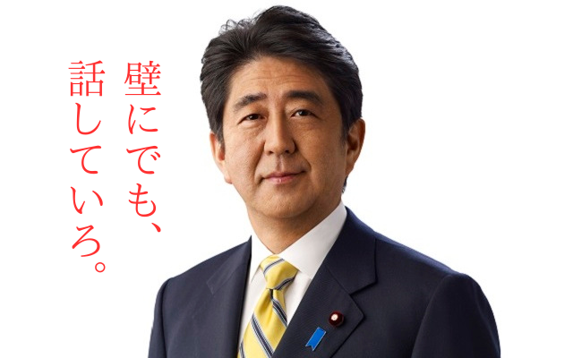

「$meigen大賞2024」
結果発表
大賞
壁にでも話していろ
──ノムリッシュ翻訳 | 名言#86
大賞は、6.46973×10^293票を獲得した$meigen86です❗️
清き水増し(迫真)が功を奏したようです。
大賞特典として、故安倍晋三氏にこの$meigenを読み上げていただきました。
その他ピックアップ
指数レベルの得票
ニュース見たけどこれは世界終わりそう。 学年末テストまで生き残れないかもね どうしよ いざ終末になってみると何していいのか分からん プーチンは止まらないし核兵器どうせ使うし、 トランプじゃないだけまだ延命できるかってレベル でもバイデンは自衛だからな 日米安保条約は使われないかもなあ 破棄の可能性ある え なにわろてんの 割とまじ 私たちは死ぬのだ
──橋本和真 | 名言#146
得票数: 4.83272×10^273
$meigen86との競り合いが激アツでした。
一月十日（日）「焦がれ」 敢えて、ある言葉を使わずに表現したいと思う。僕はどうしてしまったのか。諦める、と心に決めつつ、諦めきれずに、求めて越した二○ニ○年。今年に入って、二週間ぶりだったんだろう？追いかけてきた背中を見失って、更に高みを目指そうとして。気持ちが分からない。物が散乱した部屋の整理ができない、のではない。部屋の照明がこわれて、何も見えない、何もできない、何も分からない、そんなかんじ。でも探そう、探そうと暗闇に手を伸ばして空をきったり、無関係なものに触れる。その度に、思い出す。僕は、焦がれている。重い焦がれている？それとは少し違う。だってこれは叶うはずのない儚い悪人の夢。 僕は—————。 ♫西野カナ「ダーリン」
──橋本和真 | 名言#306
得票数: 2.72523×10^169
この日記もそろそろ4周年になるようです。
HRAMのバオバブ 石田健の対物レンズ 岡田航平のペンタゴン
──水赿雄馬 | 名言#106
得票数: 2.72523×10^169
初夢かな? (すっとぼけ)
職人技
ヴォエ！ きも！ 痛い！
──橋本和真 | 名言#111
得票数: 114514
連打が早すぎると反映されないクソ仕様なのにこれができるのはすごいと思った(小並感)
36R諸君 みんな～お元気ですか～。 毎日極熱ですよね。 まったくどうかしてるよこの暑さ！ 外に出るのもためらう毎日が続いています。 私は夜クーラー27℃でつけっぱなしで寝ているのですが（ていうか、朝からつけっぱなし）、夜中に何度も目が覚め（歳のせいもあり）、朝方にうとうとして寝過ごす毎日です。 皆さんは計画通りの夏休みをお過ごしですか？ 昨日の土曜日、埼玉会館で学校説明会が開かれました。 沢山の中学生たちが説明会を聞きに、暑い中参加しました。 皆さんと入れ違いとなる後輩たちですね。 今回、目立ったのは、会場で大きな声で挨拶する中学生が複数いました。 「みなさんおはようございます！」「おはようございまーす」 「こんにちは」「こんにちわー」ってな感じです。 今までの説明会では聞いたことのない大きな返事でした。 思わず微笑んでしまい、若いって素晴らしいなと思いました。 彼らには合格かってほしいですね。いや、合格かると思います。 36R諸君！ 夏休みも残りわずか。 少しへばっている人（私）も、頑張っている人も、残りの夏休み、悔いなく過ごしてください。 埼玉会館の帰り、浦和の伊勢丹で99.99％遮光遮熱という日傘を購入しました。￥11,000なり！ よし、明日俺は浦高祭で販売する焼き物を作りに学校へ行く！ みんなも暑いけど頑張ってくれ！ ～ババンババンバンバン ♪ ～ ご飯食べろよ！ 歯みがけよ！ ～ ♪ ババンババンバンバン～ 担任の余計なメールでした。 原島 2023.08.20
──原島秀行 | 名言#1
得票数: -8101919
最後はあのバオバブがやってくる
マイナス票の仕様を活かした神業。
ログを見ると「+1票」「+10票」「+100票」の各ボタンで丁寧に調整されていて面白かったです。
終わりに
TDN連打ゲーでしたが爆発的に票が増えるのが見れて面白かったと思います(小並感)
2025年も$meigenをよろしくお願いします。
2025年中にDiscord版botを出せるようにしたいです(出すとは言ってない)